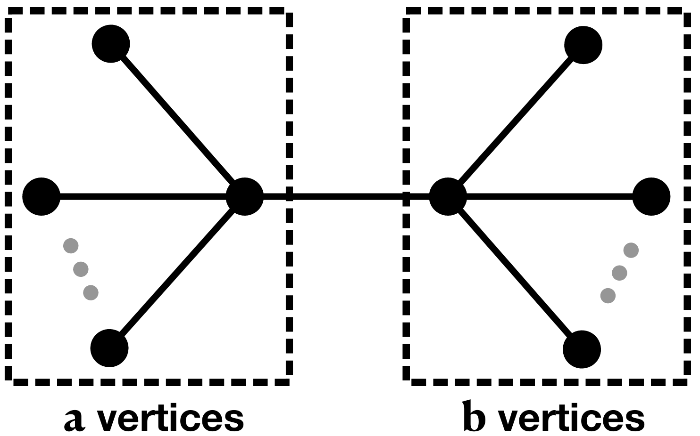

Rényi Multi-entropy for Stabilizer States: A Finite Field Gauss Sum Problem
Rényi multi-entropy probes multipartite entanglement beyond bipartite spectra, but it is hard to compute and poorly understood even for stabilizer states.
The replica contraction for stabilizer (graph) states is recast as a finite field Gauss sum problem using a core-graph representation with GHZ block sizes. Assignment sums are evaluated for tree graphs via a connected-subtree formula proved by induction, and for loop graphs through a recursive decomposition into loop-core coefficients. Key finite-assignment results are formally verified in Lean 4, starting from the finite-field assignment formulation.

A closed formula covers all tree graph states, and explicit coefficients are given for triangle, four- and five-vertex loop cores and odd cycles. Loop graphs show different behavior at even and odd replica index, and stabilizer states generically have nonflat multi-entropy spectra. The tree, core-2, core-3, triangle and four-vertex loop results are machine-checked in Lean 4.